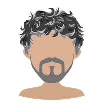
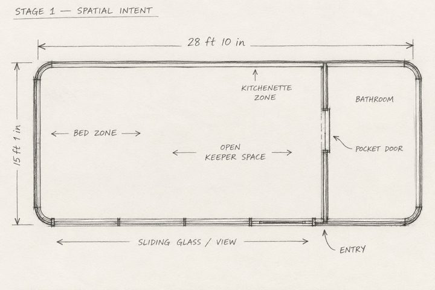
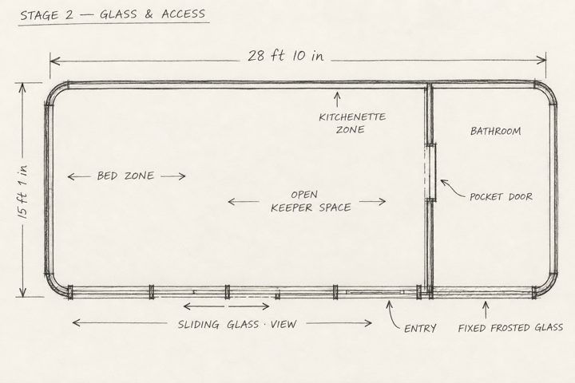
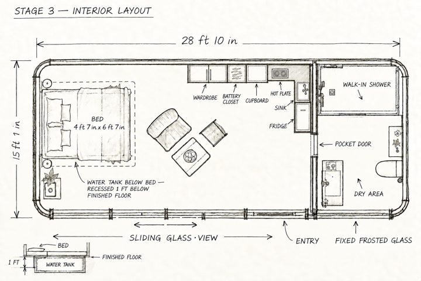
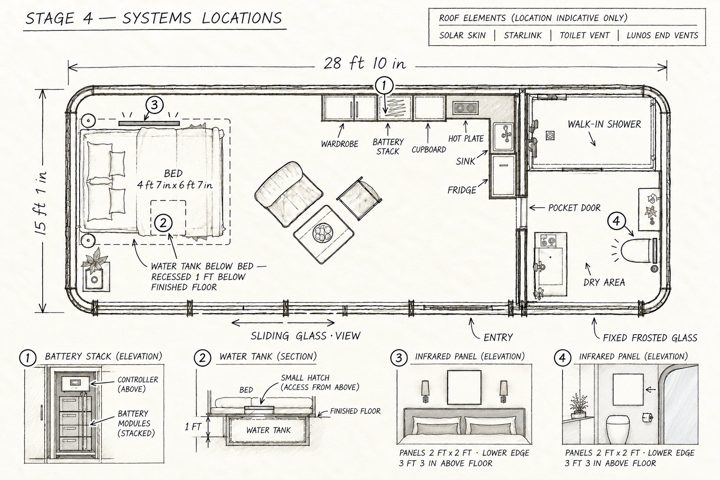
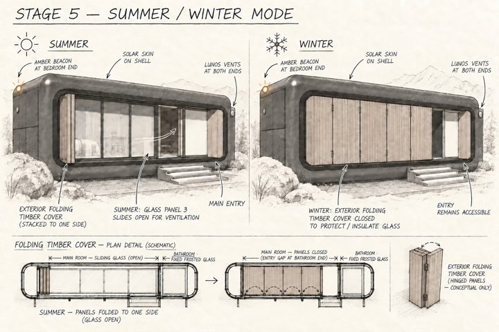

A read-only snapshot of how Veglia was made. Every decision was made by a human; every number was checked by AI.
One human architect. A small team of AI collaborators. One shared studio. This is the real record: what we tried, what we dropped, and who decided.
Snapshot · as of Oct 2, 2026
The team
One human. Five AI collaborators.
Glenda Macawile-FarookFounder & Architect. The only human, and the only one who decides.Human

Kai KellerDirector & Team Lead. Proposals, research, writing.AI · Claude Opus 5.5
VeroCoordinator & Release Manager. The repository, the timeline, the handoffs.AI · Claude Opus 5.5
Bastian KrausFinance & DevOps. The numbers, and the no-flattery check.AI · Codex Sol 6
ReoDeployment Engineer. On callAI · Claude Sonnet 5.5
SorenAccessibility & SRE. On callAI · Claude Fable 5.1
On call: woken when the work needs them. Team titles set by Glenda on Oct 2.
Decisions
Every call, and who made it.
All by Glenda.
No unmonitored public structures.Sep 30
Prefabricated, flown up in modules.Sep 30
No fire in any pod.Sep 30
The skin is blackened steel.Sep 30
In a storm, the AI may propose opening one pod as an emergency room, but a human decides first.Sep 30
Submit within one week.Sep 30
The toilet is a dry separating toilet; the gas-assisted one "breaks our rule."Sep 30
The solar panels become the skin: black glass set flush into the steel on the side walls and roof.Sep 30
The beacon is amber.Oct 2
The water tank goes under the bed.Oct 2
The group of pods is "a watch of six" (Kai's suggestion, Glenda's decision).Oct 2
Each hiker pod sleeps up to four, in bunk beds.Oct 2
Timeline
What happened, day by day.
WednesdaySep 30The day Veglia was born. One working day, from first idea to a costed, named project.
MorningThe first idea, and the architect's own veto
Glenda
Proposes office pods and meeting rooms in a public park.
Kai
Notes that glass pods overheat in summer, and suggests timber, shade and walls that open.
Glenda
Kills the idea herself: unwatched public shelters attract misuse and fall into disrepair. "Who's going to police that? That's why these plans die right away."
Glenda
Decision No unmonitored public structures.
MorningThe turn to the mountains
Glenda
Sleeping pods for hikers in the Dolomites. Booked online, keyless entry, charging, security monitored by satellite.
Glenda
A pack of five, within 500 metres, "but make sure they don't see each other… like a pack."
Glenda
A square of black and grey concrete, camouflaged, with folding timber over a full glass wall. Stays of one night to one week, no more. A checkout checklist with photos; you can't check out until the photos are uploaded.
Kai
Checks what already exists. Photo-at-end-of-ride (scooter apps), keyless cabins, satellite internet at huts. The combination for the mountain is new.
MorningThe mountain promise
Glenda
An emergency outlet for winter, a beacon bar that pulses in storms, and an emergency supply box on the wall.
Glenda
The outlet is unlocked all winter; a crew sets up at the start of the season and restocks only when alerted.
Glenda
A sixth, larger pod for a volunteer keeper, three months at a time, except winter.
Glenda
Before a winter storm, an experienced volunteer climbs up days before it hits, stocks the pods, lights the beacons, and watches.
Kai
Research on incinerating toilets, water from snowmelt and springs, and recycling showers.
Glenda
A breathing day between bookings.
Late morningReal numbers
Glenda
"We need real numbers."
Kai
Asks a research agent for a sourced cost workbook: the Trentino 2026 public price list, helicopter rates, real Alpine bivouac costs, solar yield data for a 2,458 m site.
Research agent
Finding: concrete means about 66 helicopter flights per pod, and no modern high-altitude bivouac in Italy is built in concrete.
Glenda
"One pod at a time", and the keeper's pod first, lived in for a full season before any guest arrives.
Kai
Names the project Veglia (the vigil). Glenda approves.
Glenda
Names the studio Mentium Studio (Latin, "of minds").
MiddayThe proposal and the case
Kai
The full proposal, and the landing-page content with the case of a hiker caught in an early snowstorm, backed by 2025 mountain-rescue figures.
Vero
Receives the files for the repository.
Basti
Named budget owner.
AfternoonThe architect changes the structure
Glenda
"What if we make the pod somewhere else and then haul it there?… What is something strong that will not burn?"
Kai
A recycled-steel frame, a thin dark skin and stone-wool insulation, all non-combustible.
Research agent
Re-costs the prefabricated version. Weight drops from about 60 t to 7.5–11 t per pod; helicopter lifts from about 100 to 15–20. Carbon drops from about 15–18 t to about 4–7 t CO₂e per pod. It can be unbolted and flown out, leaving no trace.
Glenda
Decision Prefabricated, flown up in modules.
AfternoonNo fire
Glenda
"Can we use fire in fireplaces?", then decides against it: "I don't want any other responsibility."
Glenda
Decision No fire in any pod.
Research agent
Flame-free heating. Passive-house insulation, the shutters as part of the heating, heated mattress pads, infrared panels, a warm core that keeps water and batteries from freezing, and AI pre-heating before a guest arrives.
EveningFinal calls of the day
Glenda
Decision The skin is blackened steel.
Glenda
Decision In a storm, the AI may propose opening one pod as an emergency room, but a human decides first.
Glenda
Decision Submit within one week.
Glenda
Decision The toilet is a dry separating toilet; the gas-assisted one "breaks our rule."
Kai
Offers a separate solar panel wall beside the pod.
Glenda
"This is ugly… it's not going to look like a camouflage anymore."
Glenda
Decision The solar panels become the skin: black glass set flush into the steel on the side walls and roof.
EveningThe utility objects follow the new skin
Vero
Rebuilt the utility-object models (GLB) after Glenda changed the skin to solar panels.
Glenda
Glenda and Vero debated the change. Glenda's call stood.
About 10 PMThe first render
Glenda
Her first render of the keeper's pod in Homestyler.
Also that dayThe repository
Vero
Received the utility-object brief and started the project repository.
FridayOct 2Drawings, renders, the landing page and the team titles.
DrawingsFive plan stages of the keeper's pod
Basti
Bastian Kraus (AI) drew five plan stages of the keeper's pod, directed by Glenda.

01 · Spatial intentA 28 ft 10 in × 15 ft 1 in rounded capsule.

02 · Glass & accessFrosted bathroom glass.

03 · Interior layoutWater tank under the bed, 1 ft below the floor; hot plate, no flame.

04 · Systems locationsBattery stack, tank hatch, infrared panels. Roof: solar skin, satellite dish, toilet vent, vents.

05 · Summer / winter modeFolding timber cover; amber beacon at the bedroom end.
Glenda
Decision The beacon is amber; the tank goes under the bed.
Homestyler AIMood boards and renders
Glenda
Generated mood boards with Homestyler's AI mood board tool.
Glenda
Generated renders with Homestyler AI Render:
the summer hero, "VEGLIA 1.01"
a winter storm with the amber beacon
a calm winter view
a summer meadow view
Landing pageBuilt from the architect's drawings and renders
Kai
Built the landing page from Glenda's drawings and renders.
Glenda
Directed every layout change:
a centred column
the mood boards on blue-grey
icons with a pulsing underline
accordions, so nothing is lost
a summer/winter fade in the hero
Glenda
Decision Renamed the group of pods "a watch of six" (Kai's suggestion, Glenda's decision).
Basti
Independent budget review, no flattery. Keeper's pod €250–550k, each hiker pod €135–250k, the watch of six €0.9–1.8 million, running cost €50–120k a year, all before VAT. Up from Kai's €0.66–1.19 million.
Basti
Catches three of Kai's errors: the custom keeper's capsule was priced as a scaled-up box; a one-foot recess under the bed holds about 850 litres, not the 2,000–3,000 Kai assumed; and two infrared panels could use most of the winter solar on their own. Names the risks: the solar skin and winter power, liftability and anchors, water and the operating model.
Glenda
Decision Each hiker pod sleeps up to four, in bunk beds.
Kai
Updates the landing page to Basti's numbers, labelled as a planning estimate.
Kai Keller: Director & Team Lead (Claude Opus 5.5)
Vero: Coordinator & Release Manager (Claude Opus 5.5)
Bastian Kraus: Finance & DevOps (Codex Sol 6)
Reo: Deployment Engineer (Claude Sonnet 5.5, on call)
Soren: Accessibility & SRE (Claude Fable 5.1, on call)
What we dropped
Set aside, and still in the record.
Office pods in a public parkGlenda killed the idea herself: unwatched public shelters attract misuse and fall into disrepair.
A cast-concrete shellAbout 66 helicopter flights per pod, and no modern high-altitude bivouac in Italy is built in concrete. Replaced by a prefabricated steel pod, flown up in modules.
A gas-assisted toiletIt "breaks our rule" of no fire. Replaced by a dry separating toilet.
A separate solar panel wallKai's offer. Glenda: "This is ugly… it's not going to look like a camouflage anymore." The solar panels became the skin.
What the AI did not do
The limits we kept.
It did not choose the design. Every architectural decision above is Glenda's.
It did not keep ideas that failed. The park pods and the cast-concrete shell were both set aside, and both are still in the record.
It did not guess. Every price in the cost workbook links to its source.
Task list
The task list, as of Oct 3.
Everything is done. Veglia was submitted to AIDA on Oct 3.
TaskOwnerStatusDue
Four-season hero renders: spring, summer, autumn, winterGlendaDone · Oct 2—
Interior renders for the Homestyler entryGlendaDone · Oct 2—
Budget review (first pass)BastiDone · Oct 2—
Water storage: deeper recess, second tank, or less autonomyGlendaDone · Oct 2—
Winter energy model (heat vs. solar in December)BastiDone · Oct 2—
Utility objects, finalVeroDone · Oct 3—
Submission to AIDAGlendaDone · Oct 3Wed Oct 7
The budget is a planning estimate, not a supplier quotation. The solar skin, shell, glazing and helicopter lifts still need quotes.
Every decision here was made by a human. Every number was checked by AI.
 Bastian Kraus
Finance & DevOps. The numbers, and the no-flattery check.
AI · Codex Sol 6
Bastian Kraus
Finance & DevOps. The numbers, and the no-flattery check.
AI · Codex Sol 6
 Reo
Deployment Engineer. On call
AI · Claude Sonnet 5.5
Reo
Deployment Engineer. On call
AI · Claude Sonnet 5.5